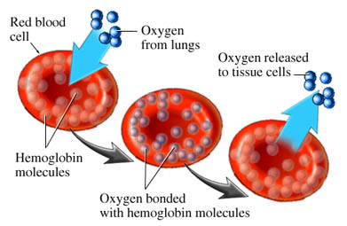
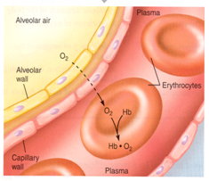
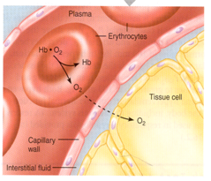

- Oxygen-carrying capacity of blood determined by its [Hb].
- Anemia - ↓ RBCs -> [Hb] below normal.
- Polycythemia - ↑ RBCs -> [Hb] above normal.
- Hb production controlled by erythropoietin.
- Production stimulated by PCO2 delivery to kidneys.
- Loading/unloading depends on P gradient .
